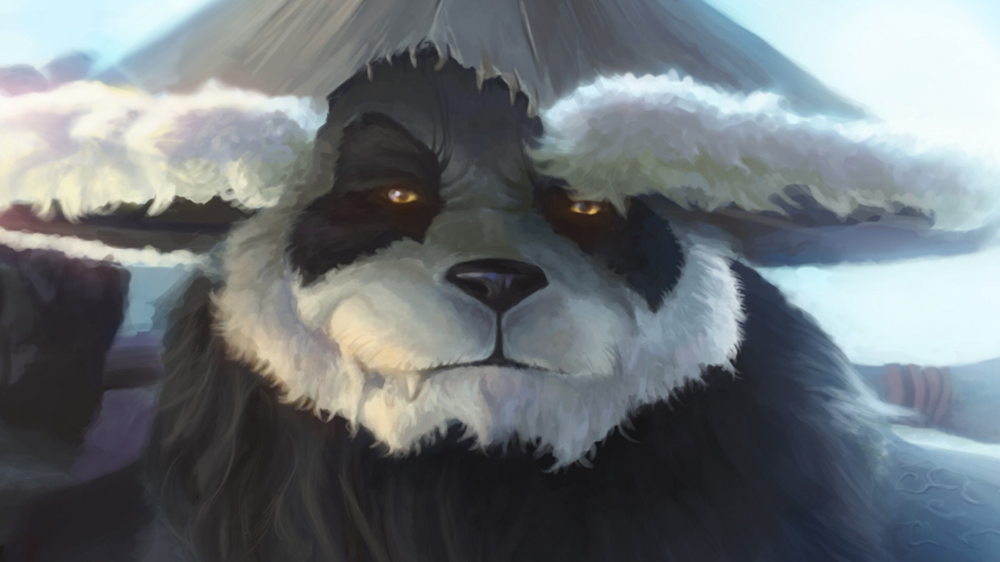

Where there is beauty there is beauty lol !
Your work is going to fill a large part of your life, and the only
way to be truly satisfied is to do what you believe is great work. And the only way to do great work is to love what you do.
If you haven't found it yet, keep looking. Don't settle.
As with all matters of the heart, you'll know when you find it.
Steve Jobs
Read more at: http://www.brainyquote.com
Warcraft
As we express our gratitude, we must never forget that the highest appreciation is not to utter words, but to live by them. John F. Kennedy
Read more at: http://www.brainyquote.com

League Of Legends
I believe in pink. I believe that laughing is the best calorie burner.
I believe in kissing, kissing a lot.
I believe in being strong when everything seems to be going wrong.
I believe that happy girls are the prettiest girls.
I believe that tomorrow is another day and I believe in miracles. Audrey Hepburn
Read more at: http://www.brainyquote.com

Sky Stars
Today I choose life. Every morning when I wake up I can choose joy, happiness, negativity, pain... To feel the freedom that comes from being able to continue to make mistakes and choices - today I choose to feel life, not to deny my humanity but embrace it. Kevyn Aucoin
Read more at: http://www.brainyquote.com